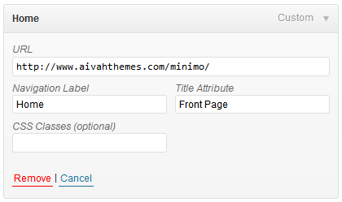
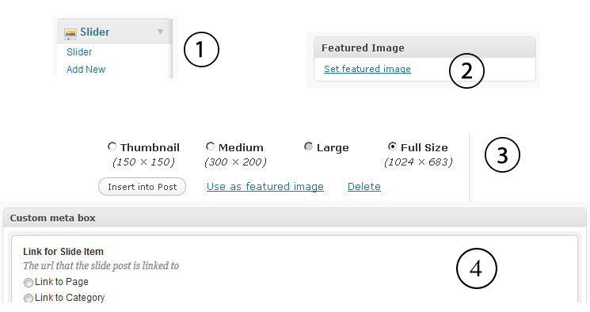
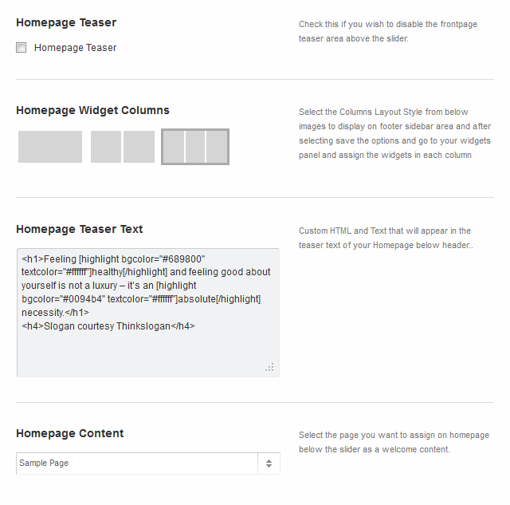
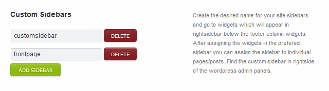
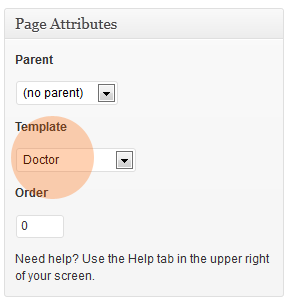
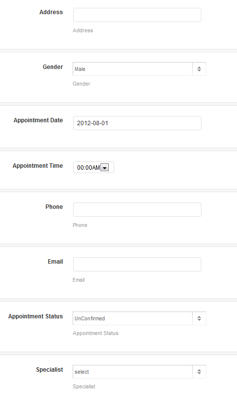
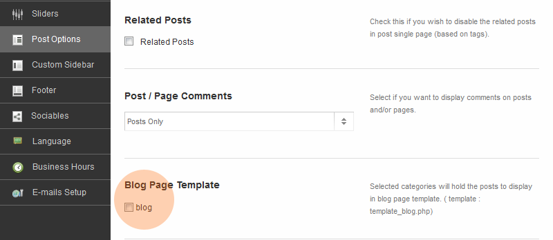
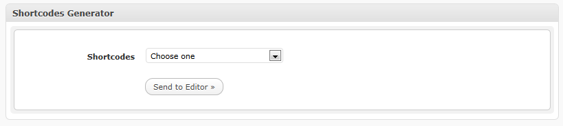
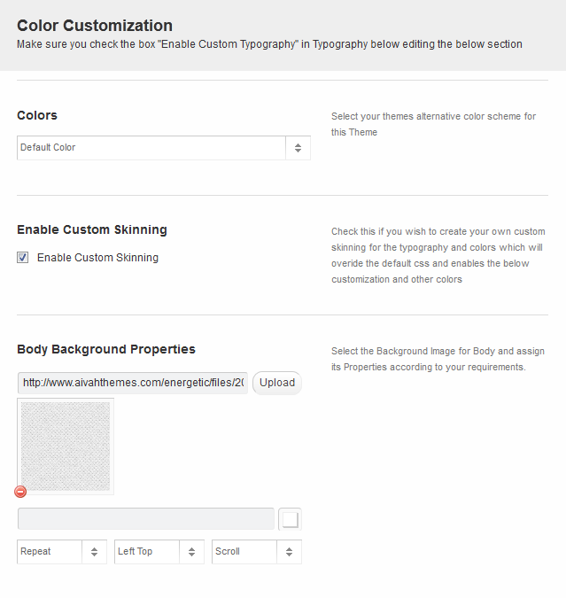
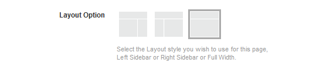

01Installing Wordpress
Useful links to get you started on Wordpress Installation
After you've installed WordPress and when everything is working fine as it should you need to go over some settings, just to make sure your wordpress is working without any problems.
- Activate the threaded comments, go to Setings → Discussion and select Enable threaded (nested) comment 5 levels deep.
- Change permalinks by going to Settings → Permalinks and select “Custom Structure” write /%postname%/ inside the input field, there’s one problem though, some hosts handles these permalink settings differently, when the normal method does not work try to ad this index.php?/%postname%/ or else contact your host for help on this matter. Some hosts may have mod_security options enabled so you need to copy the given code when you save changes for Custom Structure and paste in the ".htaccess" in your wordpress root directory.
That's it for activating and installing wordpress theme and general settings.
02Installing the theme
Our themes uses TimThumb to resize the images.
TimThumb requires the GD library, which is available on many hosting severs with PHP 4.3+ installed. Please set the cache folder permission to 777 if images are not showing after activating theme and setting slider. Still encountering problems with your images, then please visit tim thumb not working topic which was discussed on themeforest forum for help on solving the timthumb issue. If you don't want to use the timthumb then you need to use the appropriate sizes for the post thumbnails and slider images and disable the timthumb option from Energetic → Theme Options → General Tab.
!important Before you begin.
- Don't look at the front-end of the theme until you finish all the steps and options saved in theme Options Panel.
- After activating the theme go to theme options and click save changes first to load the default settings for the theme.
- Just incase you get any error while activating theme, instead of posting on themeforest item comments section drop me an email from my themeforest profile page contact form for an instant support.
Once you download package from themeforest unzip the package. The following folders will be available.
- Themefiles - themes folder that you need upload in your wordpress themes folder.
- Resources - all layered psd sources.
- License - license for the theme.
- documentation - documentation file for theme installation.
- Medical.zip - Medical.zip file ready to upload in wordpress themes.
-
Before you install the theme, make sure your wordpress version is 3.0 or higher. Then upload the latest version from folder "Themefiles" find the latest version as stated in the themeforest item description page, open the folder of the version you want to choose and copy the Medical folder under that folder and upload it to your wordpress themes directory:/wp-content/themes/ through your FTP Client. It should read like wp-content/themes/medical Not as wp-content/themes/1.0/medical/
Do not upload the whole folder of the zip package you downloaded from themeforest. After uploading to the server make sure you change the permission to 777 for skin.css and cache folder, which is located in the css folder and cache folder is located in root folder of the theme.
Next Log into your WordPress admin panel and go to Appearance → Themes (submenu). After that is done, activate the theme as you do activate other themes.
Once theme is activated you will see the new Menu above the appearance tab which says medical. Click on it to goahead and save changes for the theme options to load default settings for the theme.
03Navigation/Menu Setup
Medical user wp default navigation, you can use WordPress's Custom Navigation Menu system.
- Go to wp-admin > Appearance > Menus and create top menu then assign the menu locations and then add your menu items to the Menu's
- Theme uses 2 Menu which appears on header below the logo which is primary menu. for additional subtitle you can write subtitle in place of title attribute place. see image below

Go to Appearance -> Menus subpanel and add two menu items as shown in the “Wordpress Official Documentation“.
or
Just in case if you feel difficult anywhere below is the useful resources. Function Reference/wp nav menu
04Sliders Setup
Medical has 3 different sliders and Cycle Slider has 3 Stages 'Partial Left', 'Partial Right' and 'Full Width' layouts. Go to theme options first and then select the slider options like limit of the slider and then follow the below steps.
Flex Slider - Go to slide tab in wp-admin menu and click on Add New Slide then add the content for the slider then Upload the static image from theme options panel and you can link that image to any custom link. Make sure the width is 1000x300 pixels.
Nivo Slider - Go to slide tab in wp-admin menu and click on Add New Slide then add the content for the slider then Upload from the custom fields Upload image below the content editor. Upload Featured Image which will be displayed on partial left or right which you can choose from meta options below in Slider Meta Options Area.
Single Image Slider - Go to slide tab in wp-admin menu and click on Add New Slide then add the content for the slider then Upload the static image from theme options panel and you can link that image to any custom link. Make sure the width is 1020x360 pixels.
Video Slider - Go to Theme Options panel and under the slider options tab select the slider as Video and then below the dropdown you will find the video textarea where you have to insert the embed video code to display here the video size should not exceeed the width 1020px.
How to Assign Featured Image

Add Slides - Go to Slide menu in left wp-admin menu tabs and click on add slide to add posts for the slides. The same applies for Food Menu Items also.
Featured Image - Locate the Featured Image module on right side and click the Set featured image link. You will see an uploading screen identical to that used when inserting an image into a blog post. Follow the on-screen prompts to choose the image from your computer and upload it or choose it from one of the images already in your Media Library.
Use as featured image - Once the image has successfully been uploaded, look underneath the sizing options, and click on the Use as featured image link. Your Feature image is now set! You can close the Media selector once you’ve chosen the featured image. The image will then appear wherever a featured image is available.
Slide Options - After that you have an options below that how you want to populate your slide link, link to post, link to category, link to page, or link to manual/external link.
Your Slide Options are done now! You can now publish the post and come down to homepage to view the slider, similarly you can add more slides.
05Frontpage Content Layout
Medical - Uses page functionality for the frontpage which will be easy to use frontpage as a page. Go to theme options panel under Homepage tab then look for Homepage Content Select option where you can use the page to display on the homepage below the slider. Check the image below

06Custom Sidebars Setup
Medical use custom sidebar generator option on Medical -> Custom Sidebars, Create the sidebars you want to have in the theme, see image below.

You will now see your newly created custom sidebar available by clicking on Appearance -> Widgets on your WordPress administration menu. You can now add Widgets to your newly created sidebar.
07Doctors
Add new Doctors Specialities, Go to Doctors -> Specialities - see in bottom of your wp menu tabs or see image below and add the categories for example cardiologist, or what soever you can define the profession of the doctor.

Add new Doctors posts, while adding Doctors posts make sure you add a doctors image via wordpress media upload and assign it as featured image and then add your content. After adding everything select the specialities(category) in right pane below the publish panel.

Featured Image - Locate the Featured Image module on right side and click the Set featured image link. You will see an uploading screen identical to that used when inserting an image into a blog post. Follow the on-screen prompts to choose the image from your computer and upload it or choose it from one of the images already in your Media Library.
Use as featured image - Once the image has successfully been uploaded, look underneath the sizing options, and click on the Use as featured image link. Your Feature image is now set! You can close the Media selector once you’ve chosen the featured image. The image will then appear wherever a featured image is available. Your Feature image is now set! You can close the Media selector once you’ve chosen the featured image. The image will then appear wherever a featured image is available.
08Add Doctors Page
Now Add New Page select template as Docts from attributes panel in rightside. Make sure you choose the template options as Full width in bottom of the page options panel.

10Appointments
Add Appointments
- Go to Appointments tab and find appointments navigation where you can add the appointments and define its times and a complete patient details like Appointment Name, Appointment Time, Appointment Date, Patient Name, Patient Address and much more. It will be convenient for you to fix an appointment for the client from admin side too. See image below.

Manage Booked Appointments
- Go to Appointments tab where you can edit the appointments and there in the below custom fields you can change the dates of the appointment for those specialities and select the table suitable for the clients and update the booking with a status confirmed/cancelled or unconfirmed. Once confirmed is checked and post is updated the email will be sent to the client with a status message saying that your Appointment has been confirmed.
Manage E-mail Messages
- Go to Theme Options panel and click Email Setups tab where you can set your own messages for the clients. In that text area there is a default message set by us. If you want to change the content please do so and make sure you do not edit the shortcodes in the fields like [contact_name] [specialist_name] etc as it defines the name of that particular client who booked an appointment.
You can use the following shortcodes if you need.
[contact_name] - Name of the Patient [contact_email] Email of the Patient [appointment_date] - Date of Appointment [appointment_time] - Time of Appointment [specialist_name] - Consultant Doctor [appointment_id] - Appointment Id [contact_phone] - Patient Phone Number [appointment_note] - Patient Instructions or Note .
11Medical Options
Manage Business Hours
Go to theme options panel and under the business hours tab you can define the business hours for the whole week. If your clinic is closed then you can check the closed option there then if the user while booking selected that day it will show that the clinic is closed on the selected day.
Appointments Page
Go to pages create a new page called Appointments and select the template as 'appointment' and then publish the page. Then come back to options panel and under the Medical options tab you need to select the page you created just now for the appointment page.
12Blog Page Setup
Medical - uses a simple method for creating the blog pages, Go to Pages -> Add New, in your Wordpress administration menu and create a new page with name blog or your desired name of the page and assign the template as blog page. See image below on how to assign a template. After that select the categories to hold in 'Blog Options' from theme options panel. In top you can select the different layout style for the blog page as well.

13Shortcodes
Medical - uses Wordpress Send To Editor functionality for inserting shortcodes into your wordpress content editor, The shortcodes options can be found just below your wordpress content editor. Select the type of the shortcode you want to choose and then assign its values and click on send to editor button.

14Footer Setup
Medical - have mutilple options for footer columns, you can assign upto 6 columns in footer and if you want you can disable the sidebar footer by going to Medical -> Footer in your wordpress administration menu. See the image below. Once you setup the columns here then go to your wordpress widgets tab by going to Appearance -> Widgets tab in your wordpress administration menu and assing your own widgets in the newly created footer column widgets.
15Custom Font
Medical - uses custom google web fonts and cufon fonts as well. if you want to use any then go to theme options panel colors tab browse throught where you can choose the custom google web fonts.
If you want to choose the cufon fonts then you can go to Cufon tab in theme options panel and switch on the cufon font option and then select then font you want and preview then save changes to effect.
Note: If you are are using google web fonts then switch of the Cufon option otherwise theme will take time to load. Instead of loading in 5 seconds it will load in 7 or 8 seconds.
16Colors
Medical - have mutilple options for theme which you can set and change the complete visualization of the theme, which contains max amount of colors and if you want a header background image you can assign that background image in General Tab in Medical options, See image below for the color options you can change for.
Theme comes with 1 color preset as well which you can change from theme options panel.

17Import / Export Sample Data
Go to Theme Package Downloaded from themeforest open Sample Data folder which contains the xml file for sample data as you see on the live preview of the theme. Open your wp admin and under Tools tab click import option and in that click on the
(WordPress Import posts, pages, comments, custom fields, categories, and tags from a WordPress export file.) and select the file whichis provided for you in the sample data folder. and save chages.
If you get any error in executing the content as time limit execution etc then do the follow the procedure here http://codex.wordpress.org/Importing_Content
18Sidebar Layout
Go to Page you want to have full width or any desired sidebar positioning and then in custom fields area below the content editor see the layout Options field where you can select the sidebar layout or custom sidebars and then publish the page.
Note: If you have any queries then register to our support forum and then post your question and we will help you out in getting your queries resolved.

20Get the Code
-
Frontpage widget shortcode. go to the widgets and in Frontpage Widget 1 2 and 3 place a text widget and insert the following code and alter according to your rquirements
[image src="http://www.aivahthemes.com/Medical/files/2012/08/testtube.png" align="center"] <h4>Quisque odio ante, dictum ut varius sit amet, egestas vel odio. Aliquam nec lectus tellus, et congue enim. </h4>
-
Mini Gallery Shortcode
[minigallery class="image" width="140" height="140"] http://www.aivahthemes.com/Medical/files/2011/11/13.jpg http://www.aivahthemes.com/Medical/files/2011/11/16.jpg http://www.aivahthemes.com/Medical/files/2011/12/9.jpg http://www.aivahthemes.com/Medical/files/2011/12/13.jpg http://www.aivahthemes.com/Medical/files/2011/12/15.jpg http://www.aivahthemes.com/Medical/files/2011/12/11.jpg http://www.aivahthemes.com/Medical/files/2011/12/12.jpg http://www.aivahthemes.com/Medical/files/2011/12/10.jpg http://www.aivahthemes.com/Medical/files/2011/12/2.jpg http://www.aivahthemes.com/Medical/files/2011/12/14.jpg [/minigallery]
-
Header Top Right Side Widget - Go to the widgets section and add a text widget in Header Top Right Sidebar Widget and add the below shortcode.
Make sure you add your sociables in theme options panel in sociables tab. While added in the HEX color code areas like if you add youtube then in that place you can add a HEX color value ike #c39900 for a background for youtube sociable. More icons and colors will be added soon.
[sociable]
All Done!
Once again, thank you so much for purchasing this theme. As I said at the beginning, I'd be glad to help you if you have any questions relating to this theme. No guarantees, but I'll do my best to assist. If you have a more general question relating to the themes on ThemeForest, you might consider visiting the forum here Click Here and ask your questions, For registering into forums you need to email me from my themeforest profile page contact form in sidebar by that i can verify your purchase of the item and can grant you the access to the forums where you can post all your queries related to my items.
Please note that you have to be logged in to see that contact form on my profile page. You can follow me on ThemeForest by clicking here. And for getting updates of items or new item releasing notice you can follow on twitter as well system32store
Have fun! Regards, system32